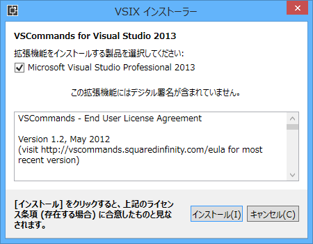
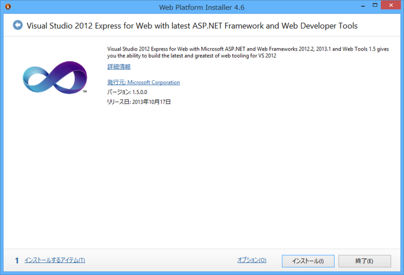

Visual Studio 2013 向け VSCommands、Productivity Power Tools などなど
公開日：
VSCommands for Visual Studio 2013

12.3.0.2（2013/11/20）
大人気拡張機能の Visual Studio 2013 版。
- CODE BLOCK END TAGGER
- FILE STRUCTURE
- SOLUTION BADGES
- SOLUTION BADGES - TOOLBAR
- SOLUTION BADTES - START PAGE
- ATTACH TO IIS
- MAIN MENU - HIDE
- MAIN MENU - CHANGE CASE
- OUTPUT WINDOWS COLORING
- SYNCHRONIZE SETTING BETWEEN MACHINES
- ZIP SOLUTION
- TOUCH SUPPORT
そういえば Visual Studio 2013 のメインメニューって、英語版は大文字なんだよね（2012 もだったかな？）。あれは割りと気に入らないっていう人いそう。
Productivity Power Tools 2013
12.0.21109.0（2013/11/16）
Visual Studio Platform Team 謹製の Visual Studio 拡張機能。いずれ次世代 Visual Studio に搭載されるであろう機能を一足早く試せる（といった立ち位置の拡張機能だったと思う）。
New additions to Productivity Power Tools 2013:
- Peek Help
- Solution Explorer Errors
- Structure Visualizer
- Double click to maximize windows
- Timestamp margin
- Quick tasks – Edit Present On
- Ctrl + Click to Peek Definition
- HTML Copy improvements
- Recently Closed Documents
- Match Margin
- Power Commands context menu cleanup
ASP.NET and Web Tools 2013.1 for Visual Studio 2012

Visual Studio 2012において、Visual Studio 2013で追加された以下の機能について有効にするもののようです。上リンクはリリースノート。
- Bootstrapテンプレート
- ASP.NET MVC 5
- ASP.NET Web API 2
- Entity Framework 6
- ASP.NET Scaffolding
- Razor Editor / Razor 3
- NuGet 2.7
インストールは今のところWeb Platform Installerに項目が出てこないので、出てくるまでもう少し待つか、以下のBlogの記事中のDownloadをクリックしてみて下さい。
ASP.NET and Web Tools 2013.1 for Visual Studio 2012 | OPC Diary - No Code, No Life.